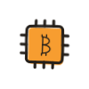

If Libreboot is the purist distribution, Coreboot is the engine underneath it: a free, minimal replacement for the BIOS or UEFI that does only what a boot process must, in code anyone can audit. It is the pragmatic road to open firmware, and it runs on far more machines.
How It Boots
Coreboot's philosophy is minimalism in stages. A tiny bootblock wakes the machine, the romstage brings up memory, the ramstage initializes hardware, and then Coreboot steps aside for a payload: SeaBIOS if you want a classic BIOS environment, GRUB to boot Linux directly, or even a Linux kernel itself. Compare that to a modern UEFI, which is practically an operating system of its own. Fewer moving parts means a faster boot, an easier audit, and less to go wrong at the layer you cannot patch from the OS.
Coreboot vs. Libreboot
Libreboot is built from Coreboot; the difference is policy. Some hardware needs vendor-supplied binary blobs (memory training, graphics bring-up) to work at all. Coreboot allows them where required, which buys much wider hardware support. Libreboot strips them out entirely, which limits it to machines that can run fully free. Same engine, different line in the sand:
- Choose Libreboot when your machine is on its list and you want zero proprietary code.
- Choose Coreboot when your hardware is not, and you still want an open, minimal, auditable boot over a vendor black box.
Getting It Onto a Machine

Expect a Linux build system, a supported board, and a few careful hours. Some machines can be flashed internally from software; a first-time install often means the same external route as Libreboot: a $15 to $30 programmer clipped to the firmware chip, with a backup of the original image taken before anything is written. Keep that backup forever. It is the difference between a recoverable mistake and a long evening.
Why a Bitcoiner Cares
The machine that runs your wallet and node starts executing code long before Linux loads, and on a stock machine that code is unreadable. Open firmware closes the gap: from power button to signature, every layer is something you or the community can inspect. As with Libreboot, do the seed and backup fundamentals first; firmware is the finishing move, not the first one.
Build it into something. Open firmware is the foundation layer of a dedicated Bitcoin computer or an air-gapped machine. Flashing questions welcome at any meetup.